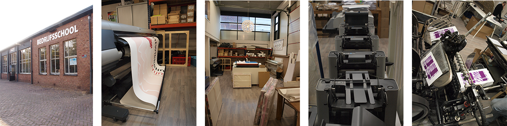

De organisatie binnen het bedrijf word behouden tussen verschillende manieren van communicatie. De telefoon staat op nr 1 samen met de chat systeem. De bedrijf bestaat uit twee panden een aanwezig in Nijmegen en de ander in Wijchen en om contact te behouden gebruiken ze deze chat systeem om snel en efficient te werk te gaan. Daarnaast word per week zeker minstens een vergadering gehouden waar de huidige stand van zaken word besproken en de manier van aanpak. En er word gebruik gemaakt van de mail, zodra een klant een van de aanwezige collegas een opdracht binnenkrijgt en deze moet doorgestuurd worden. Word er een mail gemaakt met de zodannige opdracht incl. van wie, wat er moet gebeuren en waneer dit klaar moet zijn.
De werkzaamheden binnen Media mail voorziet van een grote mix.Van alles te verkrijgbaar in onze grafische sector, voor van alles te maken met fysiek drukwerk tot digitaal ontwerp. Er staan genoeg machines en apparaten om te voorzien voor waar je ook maar naar vraagt. stans apparatuur voor het voorzien van gestansde producten. Er zijn verschillende print apparatuur voor het voorzien voor de benodigde drukwerk en de benodigde apparatuur die erbij horen zoals de snijmachine, plotter, rill apparatuur. Op het gebied van het digitale werk zijn er vormgevers aanwezig en een programmeur ze maken gebruik van de verschillende adobe programmas waaronder Illustrator, Photoshop of Indesign. In de webdesign sector gebruikt de programmeur de programmas .. en de CMS systeem Ionize zodat de website makkelijk te onderhouden is voor zowel de maker als de klant. Via fillezilla word de website op een hosting geplaats en is de product geleverd zoals gevraagt.
Klant Krijgt een idee voor een product en belt of mailt ons over het product. Vervolgens als het nodig is komt er een gesprek en komt er een goedkeuring voor ontwikkeling. Dan in de ontwikkeling word er benodigde apparatuur gebruikt voor de ontwikkeling van een ontwerp en kan er een presentatie worden ontwikkelt. Daarna word de product opgestuurd of tentoongestelt aan de klant. De klant komt dan langs en kijkt mee op de scherm en krijgt de benodigde uitle over het product. Met de goedkeuring gaat het product de productie in en kan het product afgeleverd worden en afgerond.
De kwaliteit van de product word gewaardborgd door oplettend te werk te gaan met de producten. Goeie onderhoud aan de machines en de benodigde aanpakken te ondernemen. De machines krijgen in de korte tijd een onderhouds beurt en om de zoveel dagen een controle. De apparatuur bijv. de snij machine, de print appartuur en de stansmachines worden gecontrolleert op vreemde waarnemingen en of alles gewoon nog klopt en niets buitengewoons doet. Daarna de zodanige stappen ondernemen om dit te behelpen en allerlij verkeerde situaties te voorkomen. Goed afgestelt, schoon, precies en dat de producten zelf waar op gedrukt/geprint word niets mee aan de hand is zoals kreukels of een of ander vuil zoals stoff of een of ander inkt dat er op is gevallen.
De papier in de print gedeelde is FSC gekeurd en de cannon printers zijn natuurvriendelijk ingesteld.
De kwaliteit bij de programmeurs word gewaarborgt in de manier van handelen, via de cms systeem die ze bij mediamail gebruiken handeld all veel voor de programmeur. De systeem maakt gebruik van templates die het meeste voorhandelt voor de programmeur en dat ze alleen bij hoeven te bewerken zodat het afgehandelt eruit ziet. Afbeeldingen, Links, tekst en het mooier maker van. Als het nodig is word alles extra gecontrolleert en als kers op de taart word het nagekeken door een extra persoon. Daarna word er gevraagt naar de mening van de klant in een klein voorbereide presentatie en na goedkeuring gaat de digitale product in de productie.